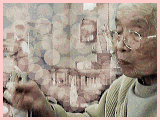

1997/4/8
春は何があっても来っとたい。
じいさんは、春のお彼岸にぽっくりいきなすった。
１５才のあの子が逝ったのは、花祭りの日だった。
どぎゃん悲しかことのあっても、春は来るとたい。
去年、風邪ば引いたつよ。あっちこっちで大騒動だったろ？この「まきば園」でも、亡くなった人のおらすとよ。
喧嘩したこともある、仲良しさんは、入院ばしてしもうた。一週間ほどして退院してきたばってん、痩せてしもうてね。髪の毛も短く切りなすったつよ。車椅子で行き来しよらす。
わしも、風邪ば引いてから、車椅子ば〜っかり乗っとるもんなぁ。足のふらふらして、つっこけるとたい。ほうっ、額に傷のあるね？
去年の秋から今年の冬にかけて、そろそろお迎えが来るのかなぁ、と思われた。
いつ行っても、ぼおっとした顔をして、目がうつろで、足はよわりきっている。
一度おさまったはずの風邪もまた、園内にはやり出して、お粥食が増えている。

ある日、メシどきのばあちゃんを訪ねた。目の前に運ばれたお膳から、お粥の入った茶碗を持ち上げて、また、お粥た〜い。 といったしぐさを見せる。肩をすくめて、首をひねったそのさまがおもしろくて、通りかかったスタッフにまだお粥のほうがいいのかと聞いてみた。
スタッフが普通のご飯をよそって、ばあちゃんのところに持ってきた。すでにお粥をあらかた平らげていたばあちゃんは、あんたが食べたらどうね？ といった顔でこちらを見る。心にもないことを、と思いながら、食べるよう勧めると、あっと言う間に平らげた。
スタッフが聞く。お粥とご飯とどっちが食べやすい？ 固かメシのほうがよか！！！
めでたくお粥食から逃れて、うれしそうなばあちゃんの顔を見ていたら、
以前、寝たきりになったら、おしまいかなぁ、と
案じたのも、杞憂のように思われた。
| 年末年始のばあちゃん | 花を見るばあちゃん |
| 4月15日というのは | ホームページに戻る |